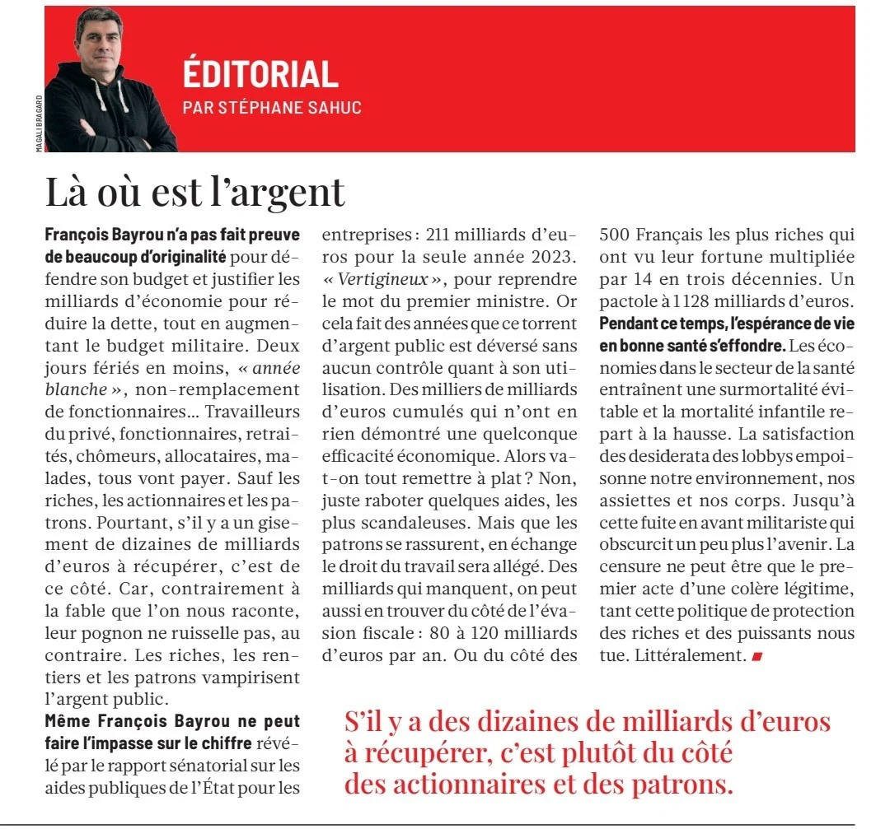

Revue de presse
« Là où est l’argent ». L’éditorial de L’Humanité sur le budget Bayrou
Date indiquée par Facebook · 17 juillet 2025
Repères éditoriaux
Nous avions relayé l’éditorial de L’Humanité sur les choix budgétaires de François Bayrou et la mise à contribution des plus fortunés.
Texte conservé avec la publication
Bayrou ne touche pas aux riches, aux actionnaires et aux patrons.
l'Humanité
Bayrou ne touche pas aux riches, aux actionnaires et aux patrons.
@[100064860845478:2048:l'Humanité]

Sources
Archive rouge · export Facebook · AR-0002-FB-01067
À lire aussi · Le PCF présente son contre-budget 2025 · Le lien vidéo